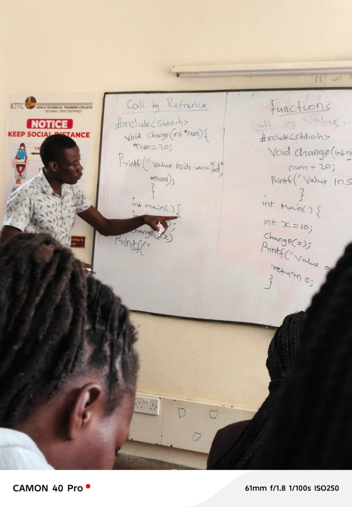

HTML
Semantic, structured and accessible web pages.
ICT PROFESSIONAL • C PROGRAMMING • WEB DEVELOPMENT
I'm Luswa Clinton, a Diploma-qualified ICT professional with practical experience in ICT support, web development and C programming learning activities. I am interested in supporting practical, learner-centred ICT training.
const developer = {
name: "Luswa Clinton",
role: "IT Specialist",
skills: [
"HTML", "CSS",
"JavaScript",
"WordPress", "C"
],
mindset: "Build. Learn. Improve."
};ABOUT ME
I am a Diploma-qualified ICT professional from Eldoret National Polytechnic (KNEC examined, 2023), with practical experience in computer-related services, web development and programming. I enjoy explaining programming concepts and creating practical digital learning resources.
My technical toolkit includes C programming, HTML, CSS, JavaScript, WordPress, computer troubleshooting, software installation and basic networking. I have approximately three years of experience operating an independent cyber business and assisting customers with digital tasks.
I enrolled for TVET Trainer Coursework (ICT Option) at Kenya School of TVET in January 2026. My studies are currently deferred due to financial constraints; I intend to resume when circumstances allow. I do not present this coursework as completed.
MY SKILLS
Semantic, structured and accessible web pages.
Responsive layouts, modern interfaces and polished styling.
Interactive interfaces and useful browser-side functionality.
Professional websites using WordPress and its ecosystem.
Programming fundamentals, logic and practical tutoring.
Computer support, digital services and troubleshooting.
ICT TRAINING & LEARNING
A practical learning approach built around explanation, demonstration, guided exercises and real programming tasks.
I believe learners build confidence when programming theory is connected to practical examples. My approach is to break concepts into manageable steps, demonstrate code, give learners time to practise and encourage problem-solving.
Topics shown reflect areas of interest and practical knowledge. Teaching assignments should match the institution’s approved curriculum and role requirements.
Selected photographs from C programming learning and demonstration activities.
LEARNING LIBRARY
Study notes and learning materials for Diploma-level ICT learners. More topics will be added as they are prepared.
To publish a new topic, upload its PDF to Google Drive, set sharing to “Anyone with the link – Viewer”, then paste the share link into resource-links.js.
FOR TRAINERS & EDUCATORS
Planning and assessment materials designed to support structured classroom delivery and practical learning.
These are independently prepared teaching resources. Trainers should adapt them to the current approved curriculum, institutional scheme of work, learner level and assessment requirements. They are not represented as official KNEC or TVET CDACC publications.
Add or update teacher-resource Google Drive links in resource-links.js. Keep the Drive files set to Viewer access.
INSTRUCTIONAL PLANNING PORTFOLIO
A dedicated area for employers, training managers and educators to review or download sample instructional plans, learning outcomes and classroom delivery schedules.
These samples show how I organise topic outcomes, lesson sequencing, trainer and learner activities, learning resources, assessment evidence and follow-up tasks. The plans are independently prepared samples and should be adapted to the institution’s approved curriculum and timetable.
To share an updated plan, upload the PDF to Google Drive, set access to “Anyone with the link – Viewer”, then add the share link in resource-links.js.
EDUCATION & PROFESSIONAL DEVELOPMENT
Eldoret National Polytechnic • KNEC examined
CompletedKenya School of TVET (KSTVET) • Enrolled January 2026
Studies deferredDeferred due to financial constraints; not yet completed.
Kenya School of TVET (KSTVET)
Certificate obtainedDownload my current CV for a concise overview of my background.
SELECTED WORK
Real work, live website links and practical C programming teaching evidence.
My responsive personal portfolio showcasing web development, ICT support and C programming training experience.
lcwebdesigner.github.io/luswa-portfolio/ ↗An educational C programming platform featuring tutorials, practical programs, exercises, viva questions and programming projects.
c-programming-hub-mu.vercel.app/ ↗
C TRAININGPractical C programming training covering fundamentals, functions, call by value, call by reference, arrays, pointers, problem-solving and console-based work.
WHAT I DO
Responsive websites using HTML, CSS and JavaScript.
Website setup, customization and content-focused solutions.
Clear, practical guidance for beginners learning C programming.
Practical computer, software and digital-service assistance.
HAVE A PROJECT?
CONTACT
For web development, ICT opportunities, collaboration or C programming tutoring, get in touch.